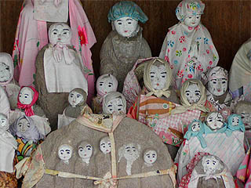
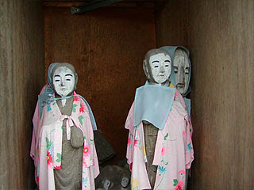

津軽化粧地蔵ファーストコンタクトはこちら。

津軽化粧地蔵巡り/稲垣村その1
稲垣村には約2000体の地蔵があるという。 稲垣村の教育委員会による「稲垣の民俗信仰」という資料にはこの村内の化粧地蔵の所在と詳しい調査報告がなされている。 今回の化粧地蔵巡りに最良のガイドブックであった。 ついでに云うと「稲垣の民俗信仰」には村内全ての地蔵のタイプなどが網羅されておりハッキリ云ってこんなページを見ているよりもはるかに詳しく化粧地蔵が紹介されている。手に入り難い資料だが、もし津軽の化粧地蔵に興味がある方は是非ご覧下さい。ここまで調べるか・・・という力作です。 ・・・というわけで、ここでは村の南部の地蔵を中心に紹介していく。
津軽化粧地蔵ファーストコンタクトはこちら。村の南西にある千年という集落の道端にあった化粧地蔵。最初なので津軽の化粧地蔵のおおまかな説明も含めて解説します。このように地蔵は地域ごとに集団で祭祀されている。これは若干の地域差があるようで、弘前や五所川原あたりでは路傍にある地蔵堂には2〜3体しかなかったが稲垣村の地蔵の多くはこのように数十から百を越える地蔵が祀られている。だから稲垣村には地蔵が2000体もあるのだ。 ここのお地蔵さんは74体という事なので多い方だろう。 そのほとんどがお手製の着物を羽織り、顔に化粧を施されている。 この化粧の仕方が若狭の化粧地蔵とは全然違う。 若狭の地蔵は半身が彫られていて後背が付いている舟形地蔵が多かった。その後背をかなりカラフルに仕上げていたのでビビットでハッピー感が強かったのだが、津軽の化粧地蔵はいわゆる丸彫りの地蔵なので後背があるわけではなく化粧も白塗り系が多いのでどうしても無気味な感じがしてしまう。 若狭と津軽。 同じ化粧地蔵でも何か意味するものさえ違うような気がする。 毛糸の帽子やヨダレ掛け位なら良く見かけるが、着物まで羽織っているお地蔵さんというのも考えてみたら凄い話だ。 注目すべきは二つの地蔵の胴体が合体している双頭地蔵。中にはひとつの胴体に3つの頭があるお地蔵さんもあった。 次は沖善津の集会所前。 ここもブロックで囲われた大所帯の地蔵堂。鼻筋だけを白く塗った化粧がお祭りの時の子供を思い起こさせて印象的だ。 左端に2体の大きな地蔵がいる。このようにどこの地蔵堂にも大きな地蔵像が1体ないし2体あり、あとは比較的小さめの地蔵が並ぶというパターンが多いようだ。大きな地蔵は身代わり地蔵とよばれ、地域共同で建立し、小さな地蔵はその集落の個人が建立しているそうだ。 また、衣替えや化粧も身代わり地蔵は地域の人達全員で行ない、小さなものは持ち主個人個人が行なうそうである。 右隅の奥に木で出来たお地蔵さんがいた。かなりインパクト大。 木製なので劣化が激しいがそれでも化粧を施されている。 再賀の小さな神社の近くにあった化粧地蔵。 こちらは近年建て替えられたのだろう。向い合せに二つの新しいお堂が建っていた。 千年、沖善津では見られなかったが十字マークの前掛が掛けられている。 何故十字なのか理由はハッキリしないが、これは津軽の化粧地蔵の最大の特色と言って良いと思う。 この後登場する化粧地蔵のほとんどにこの十字前掛が装着されていた。 一体型六地蔵にも着物と前掛と帽子（のようなもの）が掛けられている。 次に訪れたのは語利の墓地。 墓地は現在区画整理をしている様子で化粧地蔵は小屋の中に仕舞われていた。 墓地の入口にはぽつんと後生車が建っていた。 また、墓地に建つ角塔婆はあまり見た事のないカタチで、何だか宇宙戦艦ヤマトに出てくるデスラー砲みたいでした。
お次は吉出。 十字路に面して地蔵が立ち並ぶ。ここの地蔵堂は地域の共同の倉庫のような建物とくっ付いて建っている。右にあるのはゴミの集積箱。 地蔵堂探しをしているとゴミの集積箱や野菜の無人販売の小屋やバスの待ち合い小屋と間違えてしまいがち。 「おっ地蔵発見！」と思って喜んで近寄るとキュウリが並んでいたりして要注意の地蔵トラップなのだ。 中には白塗りの小さなお地蔵さんがぎっしりと。帽子の代わりに頬被りというのも有りのようだ。  ここで気になったのが地蔵堂の右側が仕切られていて独立した小部屋になっていた点である。 先程の再賀の地蔵堂でも見かけたが、何か信仰上の理由でもあるのだろうか？何か特別の意味合いがあるのだろうか？ 仕切られた小部屋には石の地蔵さんに混じって木製地蔵が。これまたインパクト大。っていうか鼻、大きすぎないですか？  沼館の地蔵堂。 後ろには田園の長閑な風景が広がる。地蔵堂は最近建て替えられて奇麗になっており中にお地蔵さんがひしめいているとは思えない建物である。 しかし中に入ればそこは津軽ワールド全開。中央の大きなお地蔵さん（これも木像）を中心に奇麗に化粧された地蔵が並んでいる。 ここも十字型の前掛が掛けられていた。頭飾りは帽子と頬被りが混在していた。 下野田の集会所の隣にあった地蔵堂。 集会所では丁度葬式の最中で、それはそれで見てみたい気もしたのだが、遠慮して地蔵堂だけささっと見て来ました。 下野田の皆さん、お邪魔さまでした。 ここの地蔵の最大のポイントは中央のお地蔵さん。 白塗、しかも雨合羽。なんとも言えない表情をしている。 てるてる坊主じゃあないよ。 地蔵とは思えない髪の毛付きのスタイルもちらほら。 もはや仏教に登場する地蔵ではなく、津軽独特の解釈による信仰神と化しているように思える。 行けども行けども化粧地蔵が現れる素敵な稲垣村。地蔵巡りはまだまだ続きます。 稲垣村その２に続く
津軽化粧地蔵巡り稲垣村その２ 稲垣村以外の地域
珍寺大道場 HOME